# 常见函数的梯度
# 基础
- 导数 derivative
- 偏微分 partial derivative
- 梯度 gradient
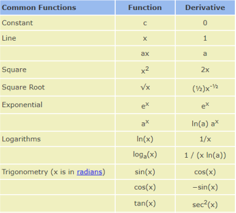
# 常见激活函数及其梯度
# Sigmoid / Logistic
\begin{align*}\frac{\mathrm{d}}{\mathrm{d}x}\sigma\left(x\right)={} & \frac{\mathrm{d}}{\mathrm{d}x}\left(\frac{1}{1+e^{-x}}\right)\\[10 pt] ={} & \frac{e^{-x}}{\left(1+e^{-x}\right)^2}\\[14 pt] ={} & \frac{\left(1+e^{-x}\right)-1}{\left(1+e^{-x}\right)^2}\\[10 pt] ={} & \frac{1+e^{-x}}{\left(1+e^{-x}\right)^2}-\left(\frac{1}{1+e^{-x}}\right)^2\\[10 pt] ={} & \sigma\left(x\right)-\sigma\left(x\right)^2\\[6 pt] \sigma^{\prime}={} & \sigma\left(1-\sigma\right)\end{align*}
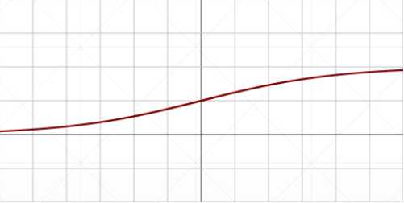
缺点，当 x 趋近于正无穷或负无穷时， 趋近于 1 或 0，所以它的导数 就会趋近于 0，造成梯度弥散
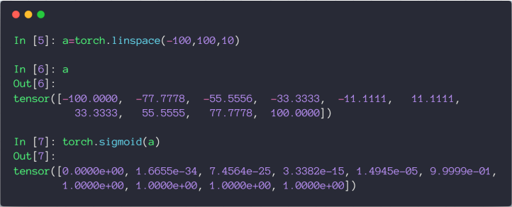
# Tanh
\begin{align*}f\left(x\right)=\tanh\left(x\right)=\frac{\left(e^{x}-e^{-x}\right)}{\left(e^{x}+e^{-x}\right)}\\ =2{sigmoid}\left(2x\right)-1\end{align*} \begin{align*}\frac{\mathrm{d}}{\mathrm{d}x}\tanh\left(x\right)&=\frac{\left(e^{x}+e^{-x}\right)\left(e^{x}+e^{-x}\right)-\left(e^{x}-e^{-x}\right)\left(e^{x}-e^{-x}\right)}{\left(e^{x}+e^{-x}\right)^2}\\ &=1-\frac{\left(e^{x}-e^{-x}\right)^2}{\left(e^{x}+e^{-x}\right)^2}\\[14 pt] &=1-\tanh^2\left(x\right)\end{align*}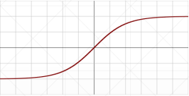
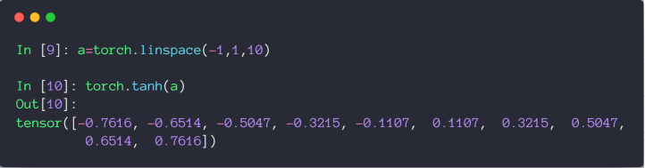
# ReLU
全称：Rectified Linear Unit
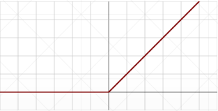
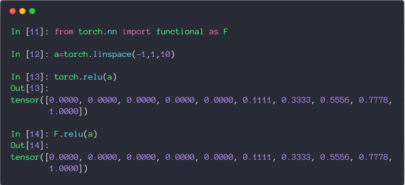
# 常见 Loss 及其梯度
# Mean Squared Error
注意 loss 和 L2 范式的区别如下
- loss =
- L2-norm =
- loss =
用 torch.autograd.grad 求参数的导数时，需要保证参数的 requires_grad 属性为 True，然后重新生成计算图
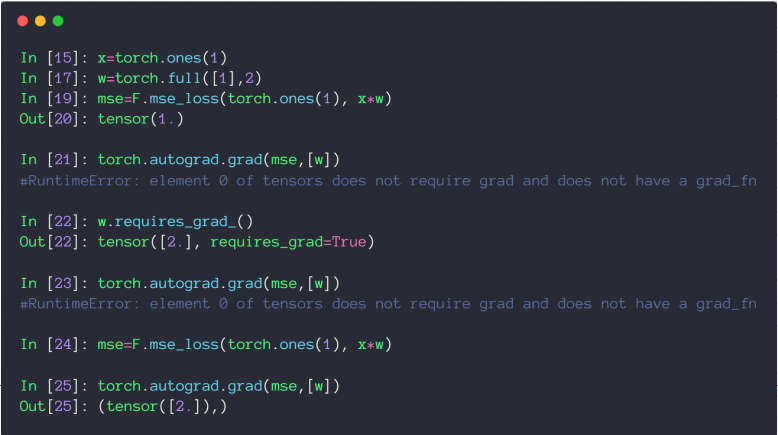
也可以用 backward 方法自动计算所有标记为可以求导的参数，赋值到参数的 grad 属性上
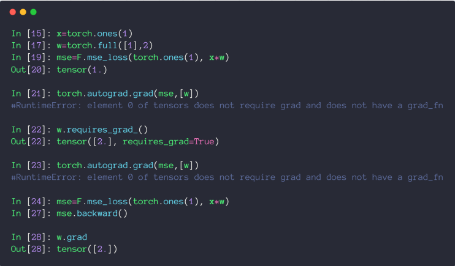
# Cross Entropy Loss
# Softmax 激活函数
和 Sigmoid 激活函数都可以返回 0-1 的近似概率值，但 Softmax 可以保证计算后的所有值的和为 1，同时会把大的值放的更大，小的值压缩到更小的空间～
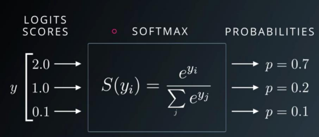
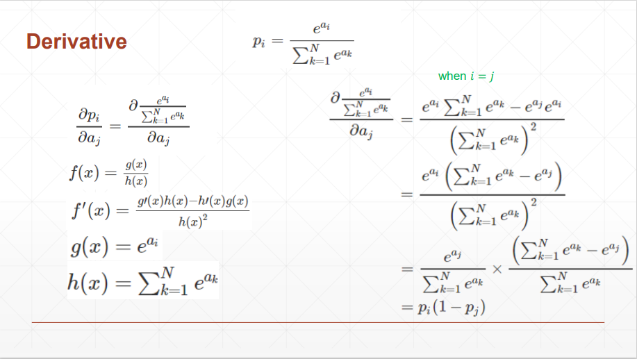
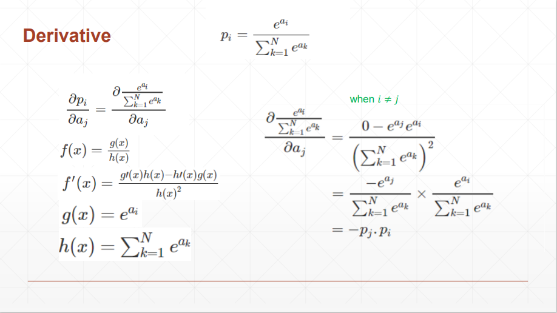
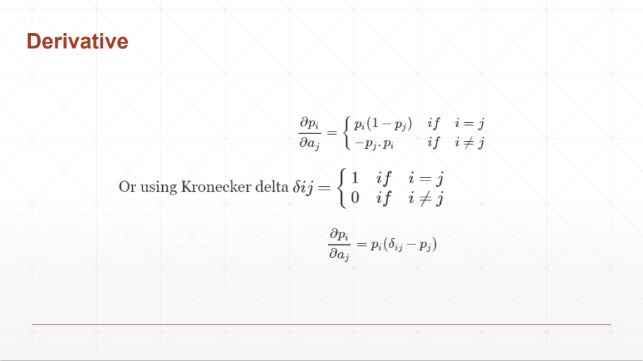
# 代码案例
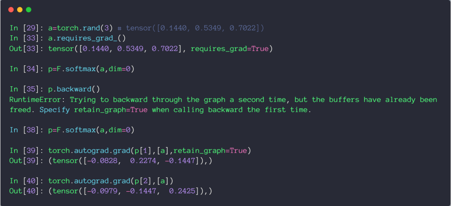
结论：当 i 和 j 相等时，导数为正，不等时，导数为负
# 感知机的梯度推导
# 单层感知机
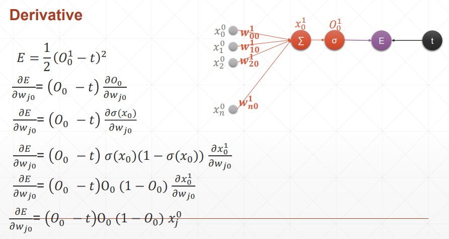
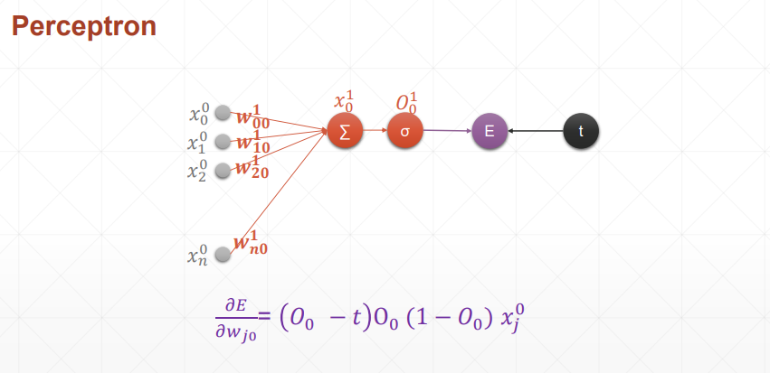
结论：损失函数对哪个参数求导，就和哪个参数有关，简洁美
# 代码示例
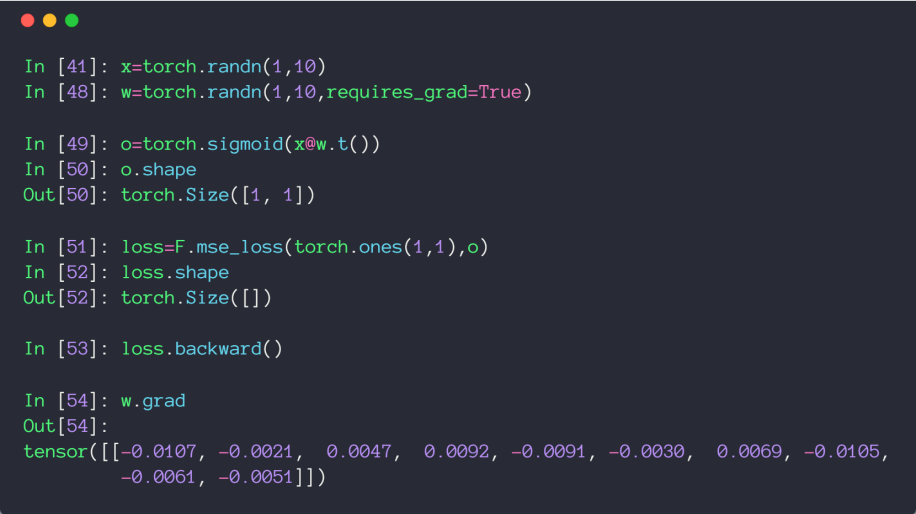
# 多层感知机
在梯度推导过程中，很巧妙的消掉了没有对 产生影响的部分，只有 才会对 产生影响，所以求和符号就去掉了
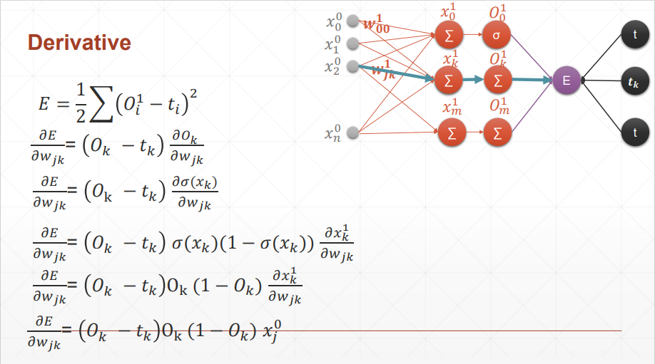
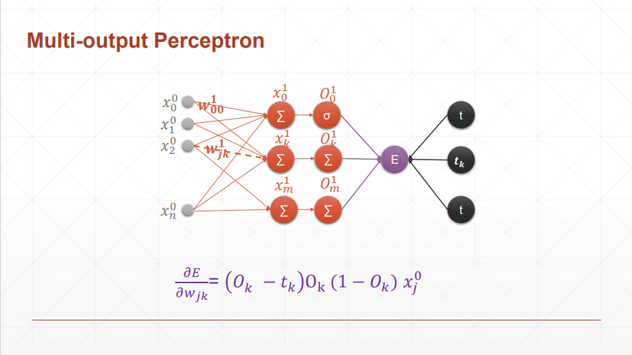
结论：可以看到和单层感知机的区别就是 变成了 O_
# 代码示例
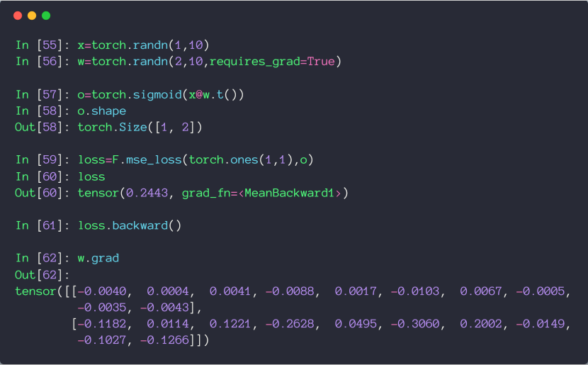
这里求损失函数时，应该写成 (1, 2)，为什么写成 (1, 1) 也不报错呢，因为符合 broadcasting，自动扩张了维度
# 链式法则
# 基本规则
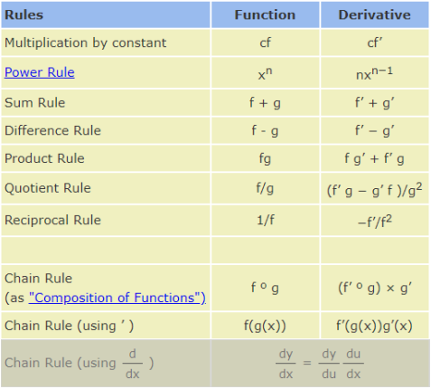
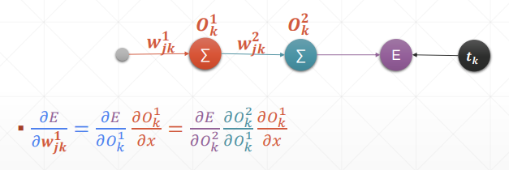
# 代码示例
可以验证链式法则结果的正确性
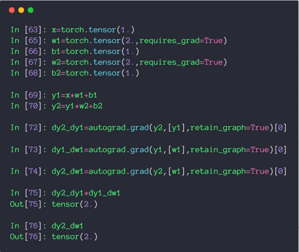
# 反向传播推导
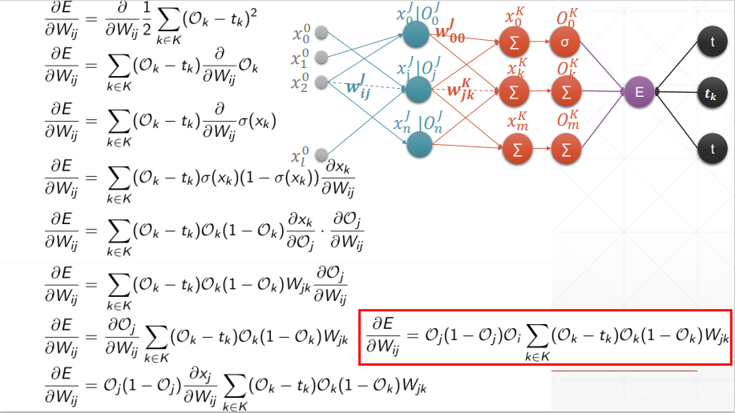
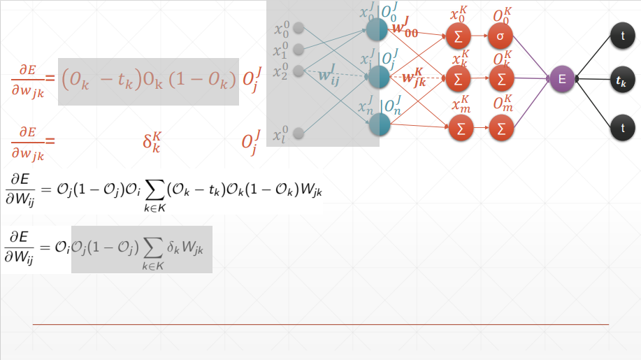
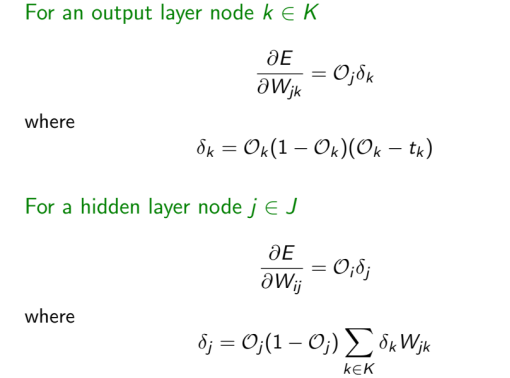
太优雅了，一环套一环的完成了反向传播
# 优化小实例
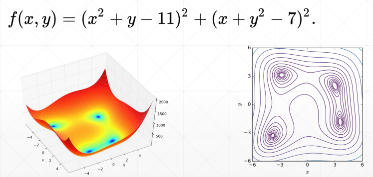
四个最小解
- f(3.0, 2.0) = 0.0
- f(-2.805118, 3.131312) = 0.0
- f(-3.779310, -3.283186) = 0.0
- f(3.584428, -1.848126) = 0.0
import numpy as np | |
from mpl_toolkits.mplot3d import Axes3D | |
from matplotlib import pyplot as plt | |
import torch | |
def himmelblau(x): | |
return (x[0] ** 2 + x[1] - 11) ** 2 + (x[0] + x[1] ** 2 - 7) ** 2 | |
x = np.arange(-6, 6, 0.1) | |
y = np.arange(-6, 6, 0.1) | |
print('x,y range:', x.shape, y.shape) | |
X, Y = np.meshgrid(x, y) | |
print('X,Y maps:', X.shape, Y.shape) | |
Z = himmelblau([X, Y]) | |
fig = plt.figure('himmelblau') | |
ax = fig.add_subplot(projection = '3d') | |
ax.plot_surface(X, Y, Z) | |
ax.view_init(60, -30) | |
ax.set_xlabel('x') | |
ax.set_ylabel('y') | |
plt.show() | |
# [1., 0.], [-4, 0.], [4, 0.] | |
x = torch.tensor([-4., 0.], requires_grad=True) | |
optimizer = torch.optim.Adam([x], lr=1e-3) | |
for step in range(20000): | |
pred = himmelblau(x) | |
optimizer.zero_grad() | |
pred.backward() | |
optimizer.step() | |
if step % 2000 == 0: | |
print ('step {}: x = {}, f(x) = {}' | |
.format(step, x.tolist(), pred.item())) |